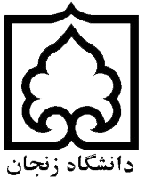

<nb-layout windowMode>
  <nb-layout-header fixed>
    <div class="header-container">
      <nb-actions size="medium">
        <nb-action icon="arrow-back-outline" (click)="goToHome()"></nb-action>
      </nb-actions>
      <div class="logo-container">
        <a class="logo" href="#">سیستم مدیریت فرآیندهای کسب وکار ( BPMS ) </a>
      </div>
    </div>
  </nb-layout-header>
  <nb-layout-column>
    <div class="col-lg-12 container">
      
      <h1>Bussiness Process Management System</h1>

      <h3>Develipers: Masoud Sadeghi, Ehsan Omidi</h3>
      <br />
      <h3>Software Engineering Students Of University Of Zanjan</h3>
      <br />
      <h3>Tir 1400</h3>
      <br />
      <h3>Supervisor: Dr.Hossein Mohammadi</h3>
    </div>
  </nb-layout-column>
  <nb-layout-footer fixed>
    <ngx-footer></ngx-footer>
  </nb-layout-footer>
</nb-layout>
